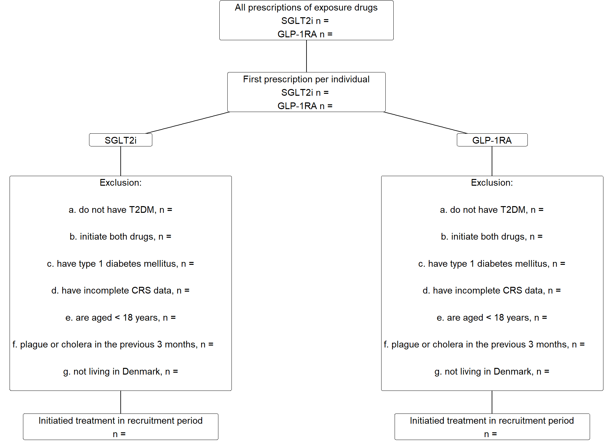
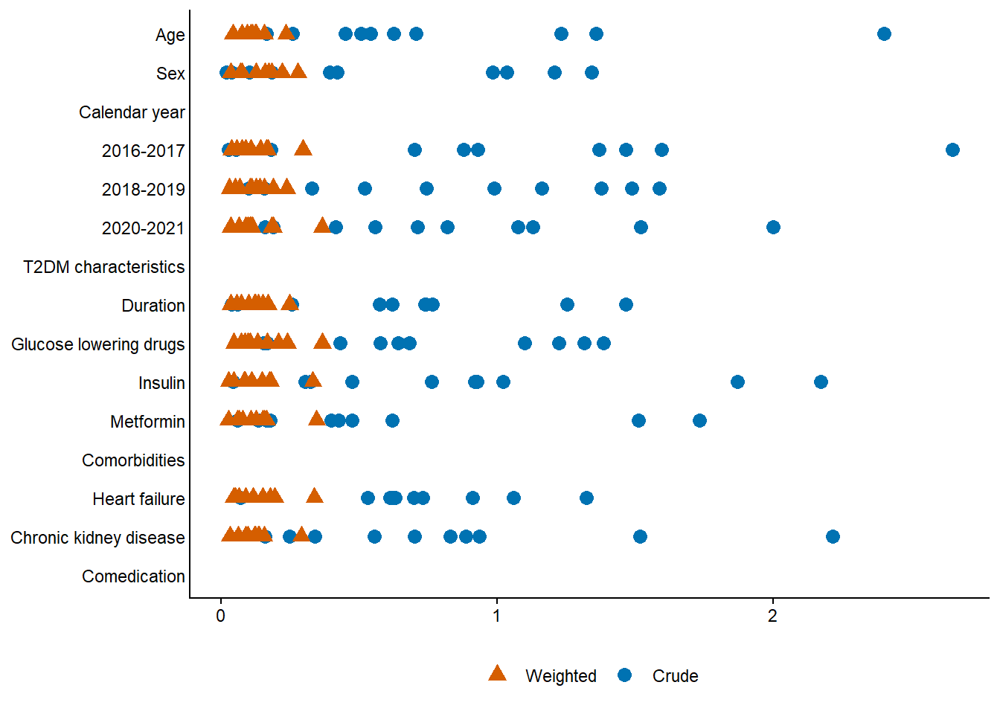

| Log of changes | ||
| Date | Change | Reason |
|---|---|---|
| 20/06/2023 | NA (First version) | NA |
SGLT2i vs GLP-1RA and the risk of Plague and Cholera
Here is an example of how a statistical analysis plan (SAP) for study applying a new user, active comparator-design could be set up.
1 Log of changes
2 Background
SGLT2-inhibitors have been linked with various infections.1 Whether it affects the risk of plague or cholera remains unknown.
3 Aim
To estimate the 5-year relative risk of plague and cholera after initiation of SGLT2i compared to GLP-1RA, which serves as an active comparator to reduce confounding and is assumed not to affect the risk of either kind of infection.2
4 Sample size
We expect the sample size to be 30-60,000 with at least 10,000 individuals in each exposure group.
5 Methods
We will conduct a new user active comparator study using population-based Danish registry data.
5.1 Data sources
We will use data from:
- The Danish National Patient Registry (patient registry)
- The Danish National Prescription Registry (prescription registry)
- The Register of Laboratory Results for Research (laboratory registry)
- The Civil Registration System (CRS)
all of which are well known to the statistical programmer and will not be described or documented further here.3
5.2 Study and recruitment period
The study period will be 1 January 2016 through 31 December 2024. The recruitment period will be 1 January 2016 through 31 December 2021.
5.3 Time
A month is 30 days, and a year is 360 days.4
5.4 Exposure groups
- SGLT2i (exposure)
- GLP-1RA (comparator)
5.5 Study population and index date
We will include individuals initiating SGLT2i or GLP-1RA during the study period using the inclusion-/exclusion steps below. The population is restricted to individuals with type 2 diabetes mellitus (T2DM) because SGLT2i is also indicated for heart failure and chronic kidney disease (CKD). We assume that restricting to this specific population of individual with a priori increased risk of infections will reduce confounding. Individuals with heart failure or CKD will not be excluded in the primary analysis.
- Extract data on the exposures from the prescription registry.
- Select the first ever date per person, this marks the index date of the individual.
- Exclude individuals who, on the index date:
- initiate both drugs
- have incomplete CRS data (sex or date of birth missing)
- are aged < 18 years
- do not have T2DM
- have type 1 diabetes mellitus
- have had either plague or cholera in the previous 3 months
- do not live in Denmark.
- Include individuals whose index date lies in the recruitment period.5
Individuals will be assigned to exposure groups based on the prescription they received on the index date. At this point, check that there are at least 10,000 individuals in each exposure group. If this is not the case, we need to make sure that the correct codes have been used.
[Here you might want to include a study diagram like Figure 1.6 However, it is repetitious by nature and as such it may not serve any particular purpose when the design is simple. If the design is more complex, a study diagram can serve as visual aid in explaining it.]
5.6 Follow-up and outcomes
For plague and cholera (the events of interest), separately, individuals will be followed from their index date until the first of: event of interest, emigration from Denmark, death, end of study period or 5 years, whichever comes first.
See the Outcomes section in Table 4 for definitions of plague and cholera. Death and emigration will be captured in the CRS.
5.7 Statistical analyses
The flowchart (Figure 2) will be populated.
The population will be described as outlined in Table 1. Continuous variables will be reported by their median and interquartile intervals (Q1-Q3), while categorical variables will be reported with counts and percentages. For dichotomous variables, only one level will be presented (e.g., only the number of females, not males, and only numbers with prevalent heart failure, not numbers without, will be reported), whereas all levels will be presented for variables with more than two levels.
The outcomes will be analyzed using time to event methods, applying stabilized inverse probability of treatment (sIPT) weighting and multivariable adjustment to handle confounding. Specifically, sIPT weighted cause-specific Cox regression with confounder adjustment (see below) will be used to estimate hazard ratios (HRs) for each event of interest, along with 95% confidence intervals (95% CIs). The results will be reported as outlined in Table 2. Using the Aalen-Johansen estimator and sIPT-weighting, we will plot absolute risks against time, as outlined in Figure 4. No crude/unadjusted outcome analyses will be conducted.
The sIPT weights will be estimated using logistic regression including the exposure as the dependent variable, and the variables listed in Table 1 as independent variables. Continuous variables will be included as restricted cubic splines with knots placed at the deciles of their distributions (to be reconsidered if insufficient balance is achieved after sIPT weighting). Interaction terms will be included for age and sex; age and heart failure; heart failure and duration of T2DM; age and CKD; CKD and duration of T2DM; and country of origin and age.
We will use absolute standardized mean differences (ASMDs) to assess balance of baseline variables before and after sIPT weighting (Figure 3). All sIPT weighted ASMDs must be below 0.1 and the ASMDs for age, sex, country of origin, heart failure, and CKD must be less than 0.01 to proceed to the outcome analyses. If this is not achieved, possible alternatives7 to an overall logistic regression model will be discussed and investigated.
Based on the populated versions of Table 1, Figure 2, and Figure 3, the entire author group must agree that the study population is reasonable with respect to size and characteristics, and that balance between exposure groups is sufficient, before any outcome analysis is carried out.8
For added robustness, sIPT weighting will be combined with multivariable adjustment when applying the cause-specific Cox regression. However, we expect relatively few outcomes, so we will only adjust for sex, age and country of origin, and age will be included as restricted cubic splines with 4 knots placed as suggested by Frank Harrell in Regression modelling strategies.
The proportionality assumption will be assessed using Schoenfeld residuals. If proportionality cannot be achieved, the 5-year risk estimates from the Aalen-Johansen estimator for each exposure group will be compared to obtain a 5-year risk ratio.9
For stratified analyses and sensitivity analyses restricted to subgroups, we will re-estimate the sIPT weights. We will assess the balance of baseline variables in these subgroup analyses using ASMDs. However, we will not re-evaluate the methods if sufficient balance cannot be achieved. Instead, any imbalance will be reported in the manuscript or supplementary material. Outcome analyses will be conducted regardless of the ASMD-values.
All 95% CIs will be estimated using bootstrapping with 500 repetitions.
The statistical analyses will be conducted using [SAS/R/Stata] version X.X or higher.
5.7.1 Missing data
We expect the level of missingness to be low.
- For comorbidities and comedication, absence of a record within the lookback period is assumed to be indicative of absence of the condition; missingness will be 0% by definition.
- Known age and sex are required for inclusion; missingness will be 0% by definition.
- We include biomarkers that are expected to be measured regularly for individuals with T2DM, missingness is expected to be less than 20% for all biomarkers.
We will apply multiple imputation,10 constructing and analyzing 10 data sets. Results across imputed data sets will be aggregated using Rubin’s rule.
5.7.2 Stratified analyses
We will estimate risks and conduct cause specific Cox-regressions stratifying on sex, country of origin and age (<65 years versus 65+ years). These results will be reported as outlined in Figure 5. To assess treatment effect heterogeneity, we will include interaction terms for the exposure and each of these variables in separate cause specific Cox models and report the point estimate and 95% CI.11
5.7.3 Sensitivity analyses
These sensitivity analyses are to be applied to the overall analysis only, stratifications will not be repeated within subgroups or in on-treatment analyses. Result will be reported as outlined in Table 3.
We will conduct a complete case analysis.
As we lack data on BMI, and we assume GLP-1RA is associated with higher levels of BMI, we will repeat the analysis within individuals with an obesity diagnosis.
We will restrict the analysis to individuals without a diagnosis of heart failure or CKD, to increase the likelihood that the indication for drug initiation was T2DM.
Finally, we will conduct an on-treatment analysis. For this analysis an individual will be censored on the date they switch from one exposure drug to the other, or if they discontinue the treatment they initiated on the index date (index treatment). Discontinuation will be defined as a period of 120 days with no new prescription of the index treatment.12
6 Table shells
| Table shell 1. Baseline characteristics. | ||
| SGLT2i | GLP-1RA | |
|---|---|---|
| N | ||
| Age, median (Q1-Q3) | ||
| Sex | ||
| Calendar year | ||
| 2016-2017 | ||
| 2018-2019 | ||
| 2020-2021 | ||
| T2DM characteristics | ||
| Duration, years (Q1-Q3) | ||
| Glucose lowering drugs | ||
| Insulin | ||
| Metformin | ||
| … | ||
| Comorbidities | ||
| Heart failure | ||
| Chronic kidney disease | ||
| … | ||
| Comedication | ||
| … | ||
| Table shell 2. Risk and HRs at 5 years. | ||||
| Outcome | Exposure | Events | Risk (95% CI) | HR (95% CI) |
|---|---|---|---|---|
| Plague | SGLT2i | (ref) | ||
| GLP-1RA | ||||
| Cholera | SGLT2i | (ref) | ||
| GLP-1RA | ||||
| Table shell 3. Sensitivity analyses, risk and HRs at 5 years within subgroups and in the on-treatment analysis. | |||||
| Outcome | Sensitivity analysis | Exposure | Events | Risk (95% CI) | HR (95% CI) |
|---|---|---|---|---|---|
| Plague | Complete case | SGLT2i | (ref) | ||
| GLP-1RA | |||||
| With obesity | SGLT2i | (ref) | |||
| GLP-1RA | |||||
| Without heart failure or CKD | SGLT2i | (ref) | |||
| GLP-1RA | |||||
| On-treatment | SGLT2i | (ref) | |||
| GLP-1RA | |||||
| Cholera | Complete case | SGLT2i | (ref) | ||
| GLP-1RA | |||||
| With obesity | SGLT2i | (ref) | |||
| GLP-1RA | |||||
| Without heart failure or CKD | SGLT2i | (ref) | |||
| GLP-1RA | |||||
| On-treatment | SGLT2i | (ref) | |||
| GLP-1RA | |||||
7 Figure shells
NB. Figure 3, Figure 4, and Figure 5 are simplified mock-ups of what needs to be made for the study. Do not pay particular attention the colors used here.
7.1 Flowchart
Provide numbers for the flowchart.

7.2 Absolute standardized mean differences
The ASMD plot will be included in the supplementary materials. Note that there will be ASMDs for each imputed data set, please include all ASMDs (across imputations) in one figure as seen below. Much less variation between imputations is expected than seen here. Please include and order variables as they appear in Table 1.

7.3 Risk curves
The risk curves should be provided in one figure including 2 panels. Replace “Intervention” and “Control” by “SGLT2i” and “GLP-1RA” in the legend.
7.4 Forest plots
Make one for plague and cholera separately. Add a column to the right, presenting the estimates and 95% CIs for the interaction term for stratified analyses (as text). Replace “Intervention” and “Control” by “SGLT2i” and “GLP-1RA”, and “Risk ratio” by “Hazard ratio” in the column header. Colors TBD depending on target journal. Note the strata shown here do not align with those to be done in this study.
8 Appendix
| Coding table | ||||||
| Variable | Data source | Codes | Patient type | Diagnosis types | Lookback | Notes |
|---|---|---|---|---|---|---|
| Exposure | Prescription registry | NA | NA | NA | ||
| SGLT2i | ||||||
| GLP-1RA | Exclude brand names Saxenda and Wegovy | |||||
| In-/exclusion | ||||||
| T2DM/Glucose lowering drugs | Prescription registry | NA | NA | 1 year | ||
| T2DM/HbA1c | Laboratory registry | NA | NA | 3 years | Any HbA1c > … indicates T2DM | |
| T2DM/diagnoses | Patient registry | All | Primary, secondary | 10 years | ||
| Recent plague or Cholera | Patient registry | All | Primary, secondary | 90 days | ||
| … | ||||||
| Outcomes | Patient registry | Inpatient | Primary | Only at a department of infectious diseases | ||
| Plague | ||||||
| Cholera | ||||||
| Comorbidities | ||||||
| … | ||||||
| Comedication | ||||||
| … | ||||||
| Biomarkers | ||||||
| … | ||||||
Footnotes
In an actual SAP you should provide references throughout the document as is relevant. In this example no references will be provided.↩︎
This is likely a stupid study to conduct in Denmark. That is intentional.↩︎
A data dictionary or other forms of documentation can be essential if the data sources are unknown to the statistical programmer, or if data can be made publicly available so that others can reproduce your results.↩︎
This might be over the top but at some point your statistical programmer will have to decide on how to compute age, length of follow-up etc. if units of time are unspecified. Avoiding “months” will often be a good idea if possible, then a year can be 365 days (or 365.25 days to account for leap years) without having confusion as to how long a month needs to be for a year to equal 12 months.↩︎
Note how the dates are not written here - they are defined in Section 5.2 and we seek to avoid repetitions.↩︎
The colors and notation in Figure 1 are not the ones typically used. No particular thought has been put into the current design.↩︎
Consider specifying.↩︎
To prevent p-hacking or HARKing, consider deciding a priori on certain intermediate milestones where analyses will be paused, and findings/results so far will be discussed in the group. In this way you can prevent yourself from changing the analyses after seeing the primary results, when it could have been done at an earlier stage.↩︎
Often this is what you would do anyway when using PS-weighting or -matching. Cox-regression is primarily mentioned to point out that PS-methods can be combined with a multivariable outcome-model.↩︎
More details should be provided.↩︎
Or however you want to do that. If you simply go for eyeballing you might want to rewrite/shorten this section a bit.↩︎
In an actual study, you might want to do something about informative censoring, e.g., apply inverse probability of censoring weighting.↩︎